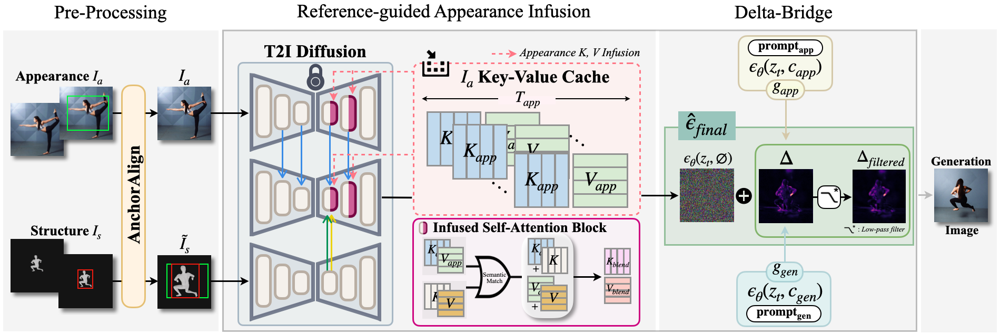
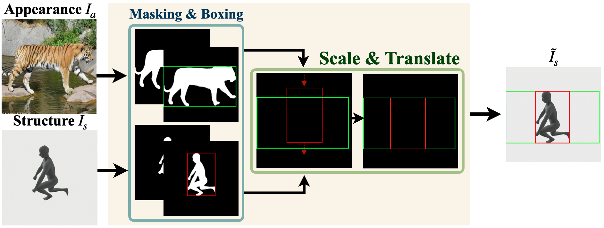

Architecture

SeAl is a novel training-free framework that achieves comprehensive semantic alignment by integrating geometric pre-processing, U-Net attention control, and guidance manipulation during sampling. It systematically resolves structural misalignment between control images, infuses the subject's identity via direct attention injection, and incorporates the user's textual intent through guidance correction. The process consists of three key components:
AnchorAlign

Pre-aligns spatial discrepancies by geometrically matching the structure to the appearance anchor via a two-step scale-and-translate operation, establishing a stable foundation for fusion.
Reference-guided
Appearance Infusion

Directly injects fine-grained identity without corrupting the target structure by caching and selectively infusing appearance Key and Value pairs into self-attention blocks based on semantic matching.
Delta-Bridge
$$g_{gen} = \epsilon_{\theta}(z_t, c_{gen}) - \epsilon_{\theta}(z_t, \emptyset)$$
$$g_{app} = \epsilon_{\theta}(z_t, c_{app}) - \epsilon_{\theta}(z_t, \emptyset)$$
$$\Delta = g_{gen} - g_{app}$$
$$\hat{\epsilon}_{final} = \epsilon_{\theta}(z_t, \emptyset) + w \cdot g_{gen} + \lambda(\gamma) \Delta_{filtered}$$
Reinterprets the semantic discrepancy between the text and appearance as a controllable correction signal ($\Delta$). It smoothly mediates conflicts by steering the generation purely toward textual changes without destroying the base identity.